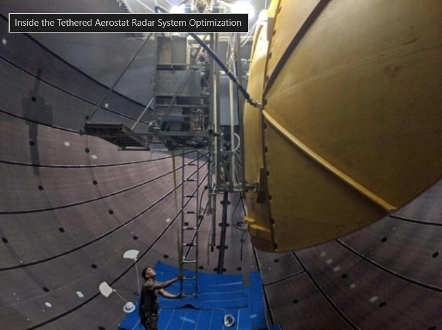
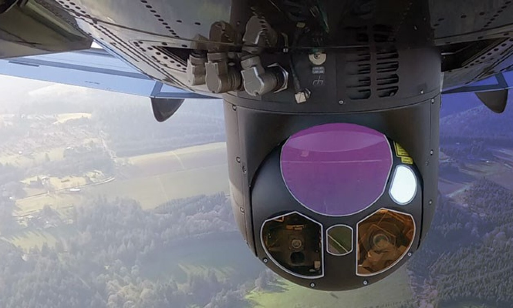
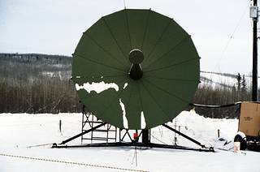

Integration
Payload & Mission Systems

Long-Range Radar
Integration of heavy phased-array or rotating radar systems. Requires managing massive power draw, liquid cooling interfaces, and high-speed fiber data links to ground processing units.

EO/IR Optics
Electro-Optical and Infrared multi-spectral turrets. Embedded focus involves gimbal stabilization logic, video encoding (H.265), and managing latency over the tether network.

COMMS Relay
Serving as a low-earth alternative to satellites. Engineering challenges include RF interference mitigation, antenna placement to avoid hull shadowing, and multi-band transceiver control.

SIGINT / ELINT
Signals Intelligence architectures requiring ultra-low noise power rails, massive data logging, and secure edge-computing nodes inside the payload bay before telemetry downlink.